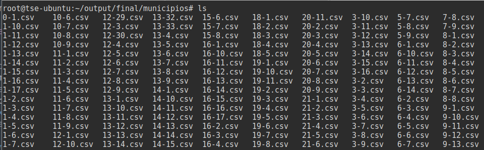

Cómo procesar los datos de las elecciones generales utilizando Python

Resumen por si no quieres leer todo y únicamente quieres los resultados:
- Link al repositorio con mi código: Repo en GitHub.
- Los resultados de las elecciones presidenciables: Descargar datos de candidatos a presidente.
- Todos los archivos en CSV de las elecciones de diputados por listado nacional: Descargar los datos de diputados por listado nacional.
- Todos los archivos en CSV de las elecciones de diputados por distrito: Descargar los datos de diputados por distrito.
- Todos los archivos en CSV de las elecciones de alcaldes municipales: Descargar los datos de municipalidades.
- El listado de los códigos de los municipios y departamentos: Descargar códigos.
En mi post anterior explicaba cómo descargué toda la información sobre las elecciones generales en mi país. Si bien estos datos son útiles para tener un respaldo de la información, deben ser procesados antes de empezar a realizar cualquier análisis con ellos. En este post te explico cómo procesé los resultados para generar archivos fáciles de leer y utilizar en cualquier análisis de datos.
Recordemos dónde nos quedamos después de descargar la información: tenemos una carpeta (que identificaré como ../output/raw) con 21099 archivos JSON, cada uno conteniendo los resultados de los cinco tipos de elección en una mesa electoral.
Empecemos por definir qué herramientas vamos a utilizar para esta tarea:
- Lenguaje de programación: Python, pues es bastante eficiente para el manejo de ciencia de datos [y es el lenguaje que más domino ¯\(ツ)/¯ ].
- Entorno de desarrollo: Jupyter Notebook, ya que puedo ejecutarlo en el servidor y acceder a él por medio de mi navegador. Debido a que tuve que descargar todos los datos en un servidor remoto (en el extranjero, por si acaso), es la herramienta idónea para esta tarea.
- Librerías:
- pandas, la excelente librería para el manejo de estructuras y análisis de datos.
- os, el paquete para manejor de archivos incluido en la librería estándar de Python.
- json, otro excelente paquete de la librería estándar de Python que permite manipular archivos JSON y convertirlos en estructuras de datos en memoria.
Mi primera idea es dejar de tener miles de archivos y convertirlos en uno solo que sea más fácil de manipular. El primer paso es encontrar una forma fácil de listar los arcihvos que debemos convertir. Para ello vamos a usar la función os.listdir(), esto creará una lista con el nombre de todos los archivos contenidos en una carpeta:
import os
print(os.listdir('../output/raw'))
# ['5556.json', '9916.json', '2503.json', '9361.json', '2312.json',...
Ya que tenemos un lista, un simple ciclo será suficiente para ejecutar un procedimiento determinado con cada archivo. Vamos cómo se hace eso:
# importar el paquete para manipular los archivos en el sistema
import os
carpeta_entrada = '../output/raw'
# esta lista contendrá todos los registros de las mesas
all_data = []
for file_name in os.listdir(carpeta_entrada):
# leemos el archivo y cargamos su contenido a la variable f
with open(f'{carpeta_entrada}/{file_name}', 'r') as f:
# convertimos el contenido del archivo json en una estructura de python
# después, agregamos ese contenido a la lista `all_data`
all_data.append(json.load(f))
¡Y ya está! Ahora nuestra variable all_data contiene todos los registros JSON en una sola estructura. Lo único que hace falta es exportarla a un solo archivo.
# crear un archivo unificado que contenga los datos
carpeta_salida = '../output/final/resultados.json'
with open(carpeta_salida, 'w') as f:
json.dump(all_data, f, ensure_ascii=False)
Hasta aquí todo bien, tenemos un único archivo JSON que podemos utilizar para analizar los datos… Pero honestamente, será difícil estar descifrando la estructura de los datos cada vez que querramos utilizarlos. Así que mejor vamos a convertir los resultados en un archivo CSV, algo que cualquier persona pueda abrir en Excel.
# Crear datos de elección para presidente
structured_data = []
# vamos a recorrer cada una de las mesas
for mesa in all_data:
# este diccionario contendrá los datos "limpios de la mesa"
n_rec = {}
# en este caso "record" es cada campo de información de la mesa
for record in mesa['TE'][0].keys():
n_rec['NROMESA'] = mesa['NROMESA']
# todos los campos, a excepción del conteo de votos, son strings, así que validemos esto primero
if record != 'VOTOSTE0':
# agregamos cada campo del registro original a nuestro diccionario
n_rec[record] = mesa['TE'][0][record]
else:
# para los registros de votos vamos a crear una columna para cada partido
# estas columnas iran como votos_PARTIDO1, votos_PARTIDO2, etc.
for votos in mesa['TE'][0]['VOTOSTE0']:
# este es un truco simple para tomar los datos del partido y adjuntar el "voto_"
n_rec[f"voto_{votos['D'].replace(' ', '_')}"] = int(votos['V'])
# finalmente, agregamos el diccionario a nuestra lista que contiene todos los datos estructurados
structured_data.append(n_rec)
¡Y listo! Ahora tenemos una lista de diccionarios que contiene todos los registros de manera estructurada. Como quiero exportarlos en un archivo CSV, vamos a utilizar la librería Pandas para convertir esta estructura en un DataFrame y generar los resultados.
# convertir la lista en un dataframe de pandas
main_df = pd.DataFrame(structured_data)
# exportar el dataframe en un archivo
main_df.to_csv('../output/final/resultados.csv', index=None)
Ya llevamos una de los cuatro tipos de elecciones (en Guatemala hay cinco, pero una de ellas no sirve para nada, así que no la cubriré). Las elecciones de diputados por listado nacional siguen la misma mecánica que las presidenciables, por lo que no agregaré información al respecto. Únicamente debes cambiar el VOTOSTE0 por un VOTOSTE1, cambiar los 0 por 1 y volver a ejecutar la parte de código de arriba. Así que ya tenemos dos de los cuatro tipos. Ahora vienen los más interesantes: alcaldes y diputados locales.
En Guatemala existen 22 departamentos (regiones), divididos en un total de 340 municipios (ciudades). Cada municipio elige a un alcalde y cada departamento a una cantidad variable de diputados. No todos los partidos políticos que participaron en la presidencia participan en estos dos tipos de elecciones, por lo que seguir el método anterior sería poco práctico. Además, ya que las elecciones son locales, tener un archivo gigante con todos los resultados quizás no sería el resultado ideal. En este caso, creo que prefier crear un archivo por cada municipio y uno por cada departamento. Nuestro objetivo entonces es:
- Separar los datos totales en 340 archivos, uno para cada municipio.
- Separar los datos totales en 23 archivos, uno para cada departamento (la ciudad capital se cuenta como un departamento separado).
Ya que el procedimiento será muy similar, explicaré únicamente el más complejo: el de municipios. Empezaré haciendo una pequeña diferencia respecto a los métodos anteriores, en lugar de tener una lista ordenada de registros, crearé un diccionario donde cada clave contenga un set de datos por municipio. Convenientemente, cada registro de mesa tiene un código de departamento y municipio, así que lo usaré para identificar los sets de datos. Para ello utilizaré un defaultdict, una estructura especial de la librería collections de Python. Esta estructura me permite generar un diccionario con un tipo de dato predefinido para cada registro; en este caso será una lista. Mi objetivo es obtener algo así:
diccionario_municipios = {
# set de datos de municipio 10-13
'10-13': [
# datos mesa 1,
# datos mesa 2,
],
# set de datos de municipio 10-14
'10-14': [
# datos mesa 3,
# datos mesa 4,
],
}
Una vez obtenida esta estructura, exportaré cada set de datos a un archivo para poder finalizar el procesamiento.
# carpeta de salida
output_folder = '../output/final/municipios'
# estructura que contiene la información de los registros de municipalidades
muni_dict = defaultdict(list)
for mesa in all_data:
# la información por mesa
n_rec = {}
try:
# otra vez, separar cada campo del registro de JSON
for record in mesa['TE'][3].keys():
n_rec['NROMESA'] = mesa['NROMESA']
if record != 'VOTOSTE3':
n_rec[record] = mesa['TE'][3][record]
else:
for votos in mesa['TE'][3]['VOTOSTE3']:
n_rec[f"voto_{votos['D'].replace(' ', '_')}"] = int(votos['V'])
# el codigo del set de datos es DEPARTAMENTO-MUNICIPIO
codigo_municipio = {mesa["TE"][3]["DEP"]} + "-" + mesa["TE"][3]["MUN"]
# agregamos los datos de la mesa electoral para la lista contenida en ese código
muni_dict[codigo_municipio].append(n_rec)
except IndexError:
# validando que evita un error a causa de los votos de guatemaltecos en estados unidos
pass
except KeyError:
pass
# en lugar de exportar un solo archivo, recorremos la lista y exportamos un archivo por cada registro
for municipio in muni_dict.keys():
# exportar cada registro a un archivo individual
pd.DataFrame(muni_dict[municipio]).to_csv(f'{output_folder}/{municipio}.csv', index=None)
¡Y con eso terminamos! Ahora, si inspeccionamos la carpeta, veremos que tenemos los 340 archivos generados. Nuevamente, el procedimiento es el mismo para los diputados de distrito. Estoy seguro de que si llegaste hasta aquí tienes puedes modificar el código y adaptarlo a tus necesidades. Puedes ver el código terminado y completo en el repositorio de GitHub.
En este post únicamente compartí cómo procesé los datos en la etapa previa a realizar un estudio. Como lo habrás notado, dista mucho de ser un proceso de análisis de datos. Si te interesa la publicación de mi estudio, no olvides seguirme en twitter.